Where students grow, Panjab thrives.
Empowering students to design, fund, and lead meaningful projects that contribute to Panjab's recovery, rooted in seva and built on listening. Our network spans more than 29 student groups across United Sikh Movement chapters.
A student-led initiative of United Sikh Movement
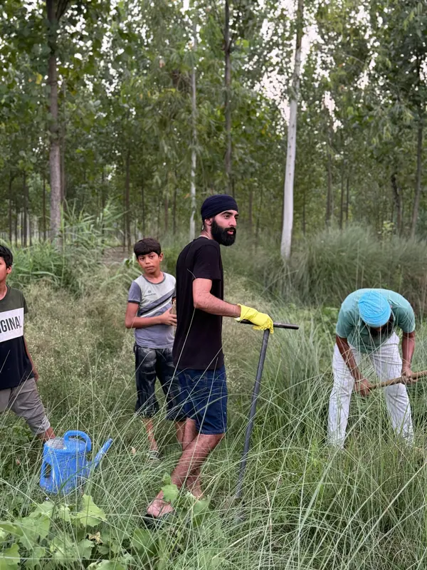
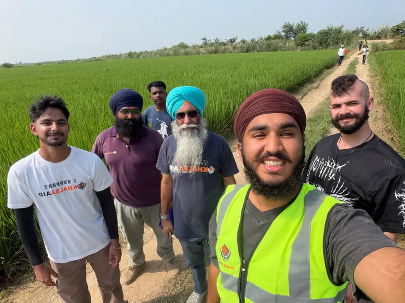
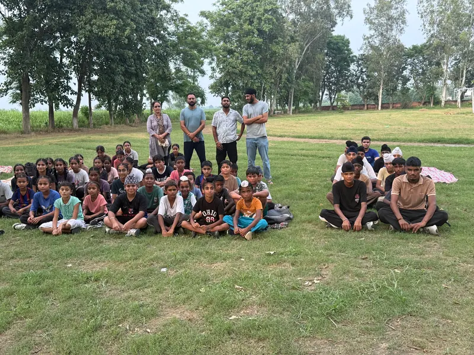
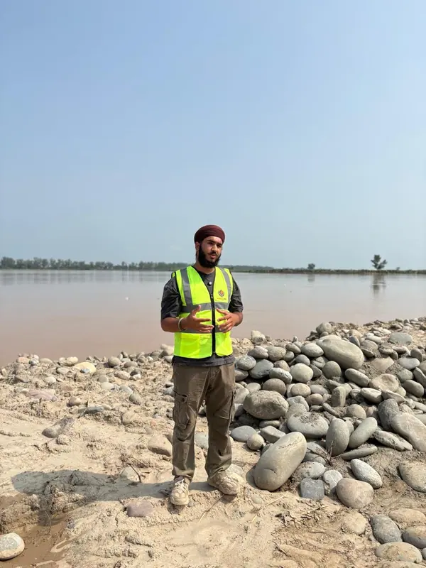
ਸੇਵਾ seva: selfless service
Rooted in seva. Driven by students.
Khudrang Roots is a student-led initiative under the United Sikh Movement, empowering students to design and lead meaningful projects that contribute to Panjab's recovery and long-term growth, while building their own leadership and career skills.
We bring together Sikh student organizations across campuses to turn creativity, passion, and fundraising into real, lasting impact in Panjab. Every project starts with listening, not imposing.
From a real problem to a funded project.
Students propose projects aligned with their passions. We collaborate, refine, and fully fund the best ideas for implementation in Panjab.
See the full process-
Identify
Students identify a real issue impacting Panjab.
A specific problem in healthcare, environment, disaster relief, technology, education, advocacy, or infrastructure that they feel compelled to solve.
- Individual students
- Student teams
- SSAs and SCFs
-
Propose
Turn that problem into a concrete proposal.
Community-informed and focused on sustainable impact. We provide guidance to help shape the idea into something actionable and ready to fund.
- Mission statement
- Research & data
- Problem analysis
- Goals, timeline & budget
-
Refine
Selected teams work with Khudrang Roots and partners.
Strengthening plans through mentorship, logistics support, budgeting, and direct connections to communities and organizations in Panjab.
- Implementation plans
- SMART goals
- Sustainability strategies
- Expansion roadmaps
-
Review
Reviewed by the Khudrang Roots committee.
Approved projects receive full funding and organizational support to bring their initiative to life on the ground in Panjab.
- Community impact
- Feasibility & sustainability
- Innovation & research quality
-
Build
Teams begin building in Panjab.
Working alongside partners and communities, staying connected through regular updates and collaboration. Real people, real places, real impact.
- Fully funded projects in Panjab
- Long-term community impact
- Leaders rooted in seva
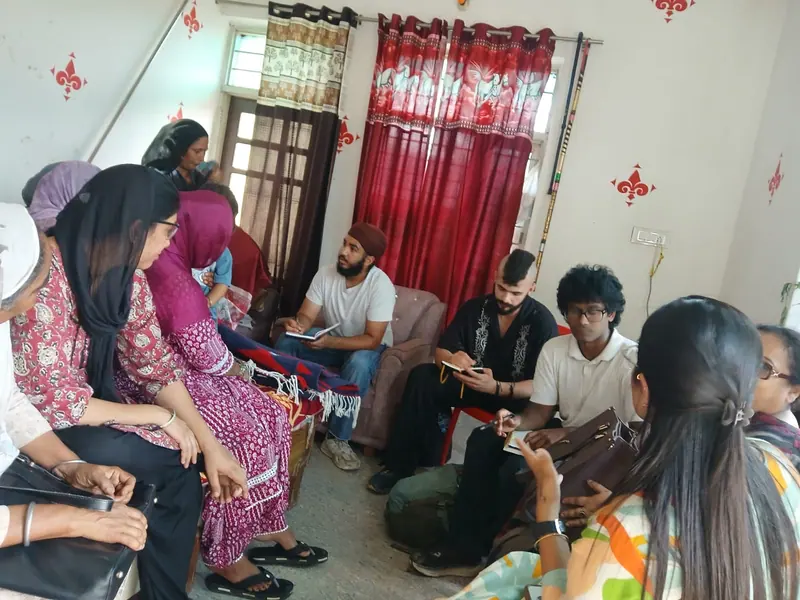
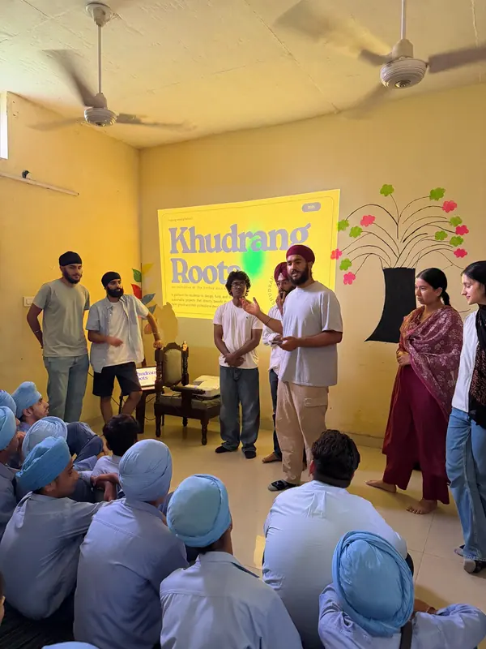
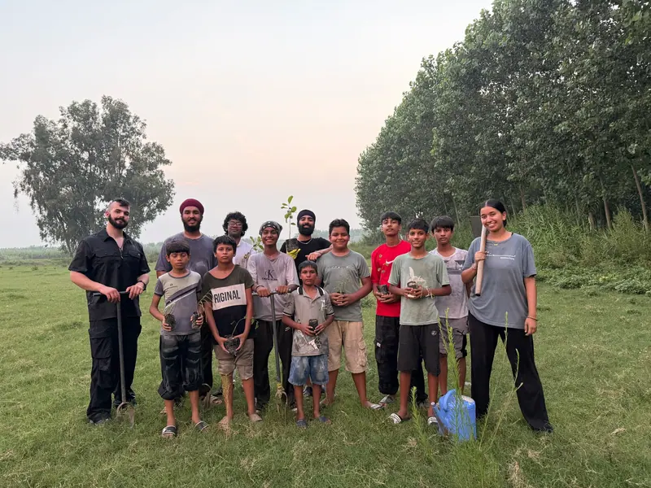
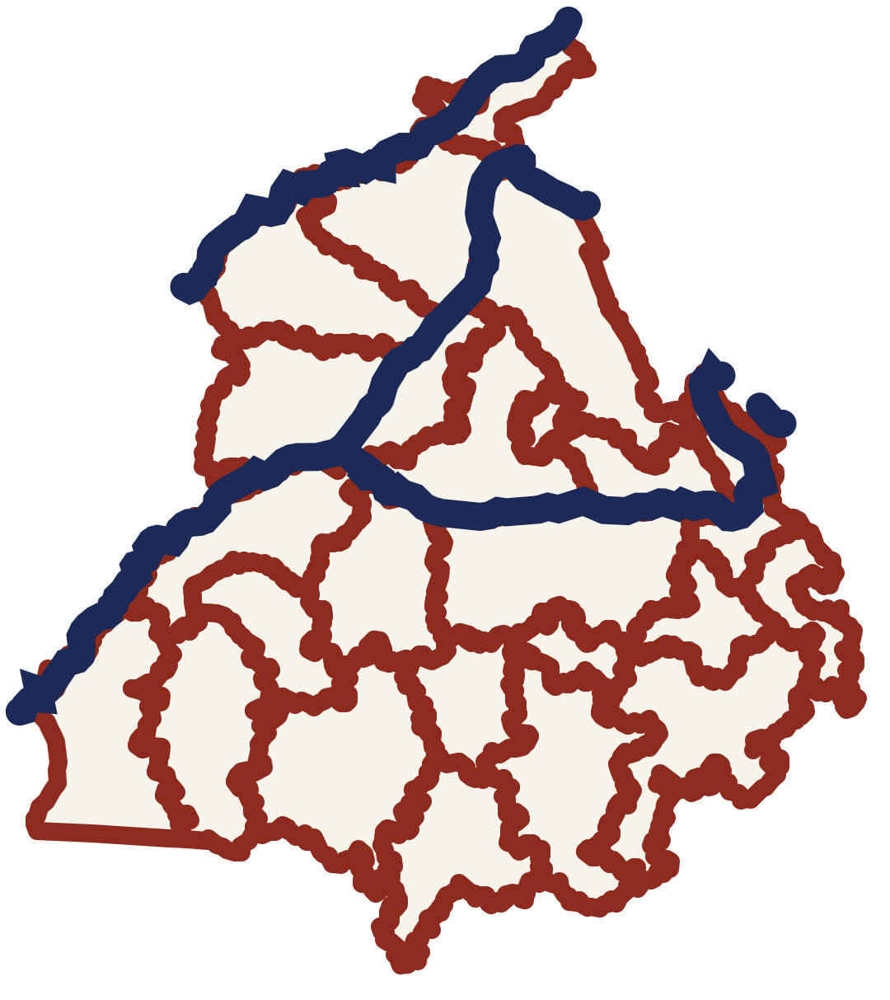
Summer 2026
In August 2026, our first cohort went to Panjab.
The trip focused on listening: shadowing organizations, speaking with community leaders, and visiting communities to understand the challenges they face, firsthand.
See the trip in photos-
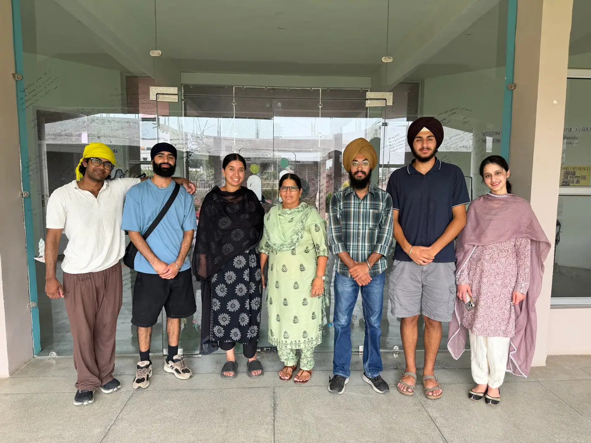
Youth engagementTime with local village youth, and material support for GHK Lab School, where the cohort also helped digitize assessment records. -
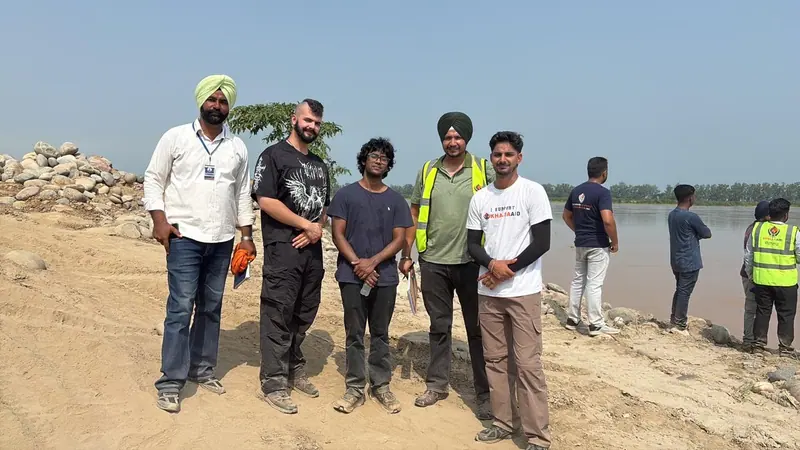
Working with Khalsa AidThe cohort visited Khalsa Aid project sites and met the charity’s trustees. - Increasing biodiversityPlanting native saplings with local children.
-
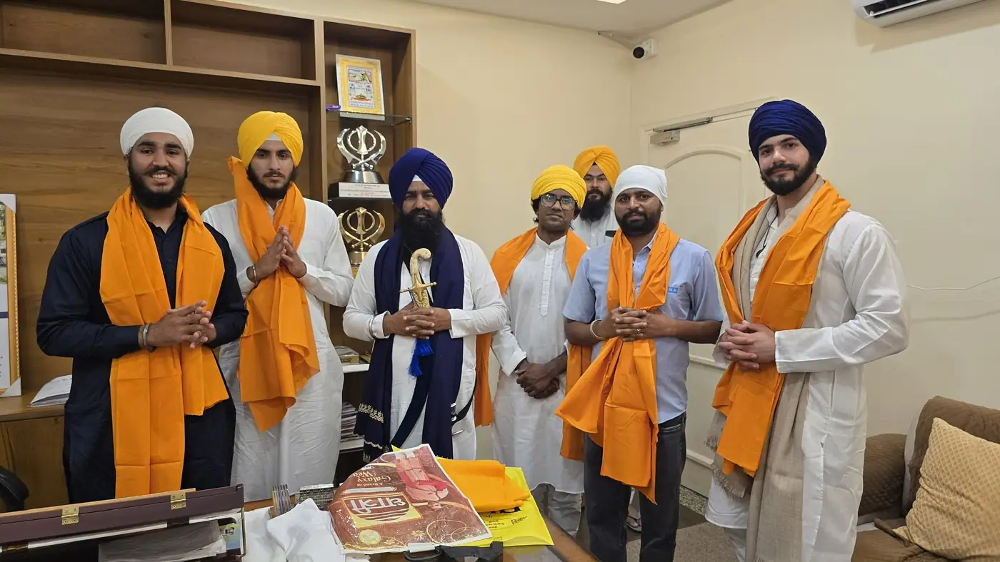
Meetings and visitsMeetings with Jathedar Sahib of Sri Akal Takht Sahib, Khalsa Aid, Roundglass Foundation, and Gurmeet Kaur from PiPPAL, plus conversations with families in their homes and visits to local offices.
We do not politically associate with any organizations or individuals.
Research: What we found in Panjab
Punjab is out of the first layer of water. The second is toxic. The third is too hard to reach
Gurvel Singh Malhi
- Agriculture, land and the farmer economy
- Water and environment
- Education and schools
- Health and healthcare
- Livelihoods, finance and women's work
- Governance, structure and corruption
- Caste, community and trust
- Youth, drugs and leaving
- Waste and sanitation
- Floods and disaster response
- Ravi
- Beas
- Satluj
Open roles
None of these roles has an application. To get one, make what’s listed under it and send it to us. Any role also lets you skip the application for the summer cohort in Panjab.
Hiring now- ResearcherPick a topic from the Panjab Atlas and write a 2–3 page research draft.
- Solutions CoordinatorPick a problem from our field research and write a 2-page proposed solution.
- Fundraising CoordinatorWrite a one-page idea for our next fundraising campaign, or raise $500 organically on our Dasvandh Network page.
- Marketing CoordinatorDesign a poster that explains Khudrang Roots.
- Social Media ManagerMake a reel that explains Khudrang Roots.
- Website DeveloperDesign a new homepage for khudrangroots.org.
- RecruiterRecruit one person for any of our other roles.
Working alongside organizations on the ground.
The students behind Khudrang Roots.
Student leaders from Sikh student organizations at UC San Diego, Las Positas College, UC Davis, and San José State University.
Team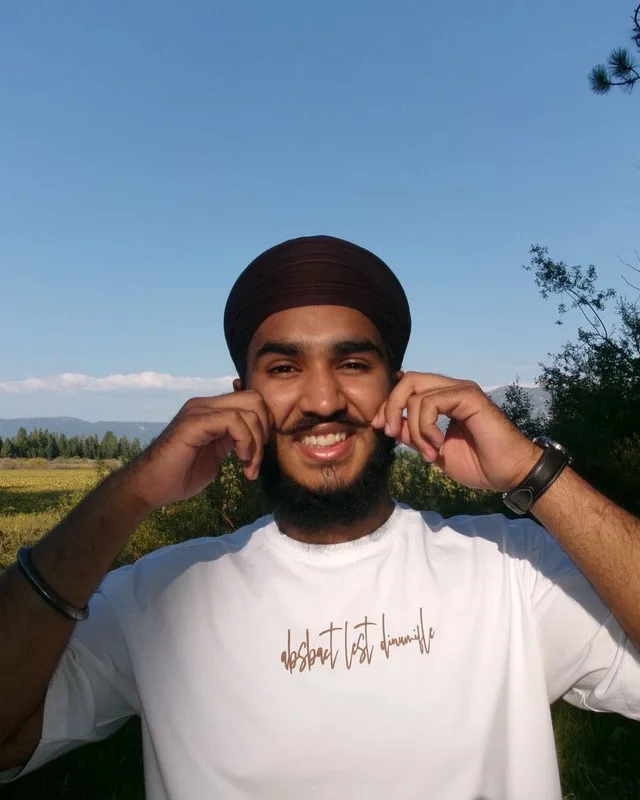
Harshdeep SinghFounding Director 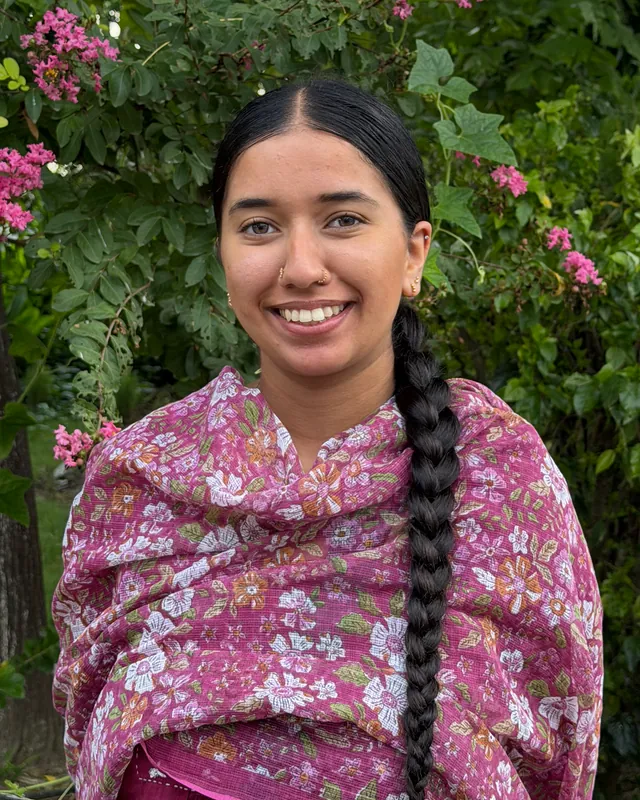
Hasmeet KaurDirector of Operations 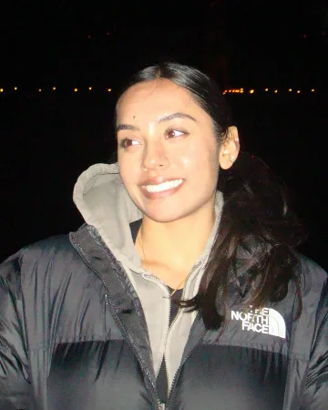
Jaspreet KaurDirector of Strategy 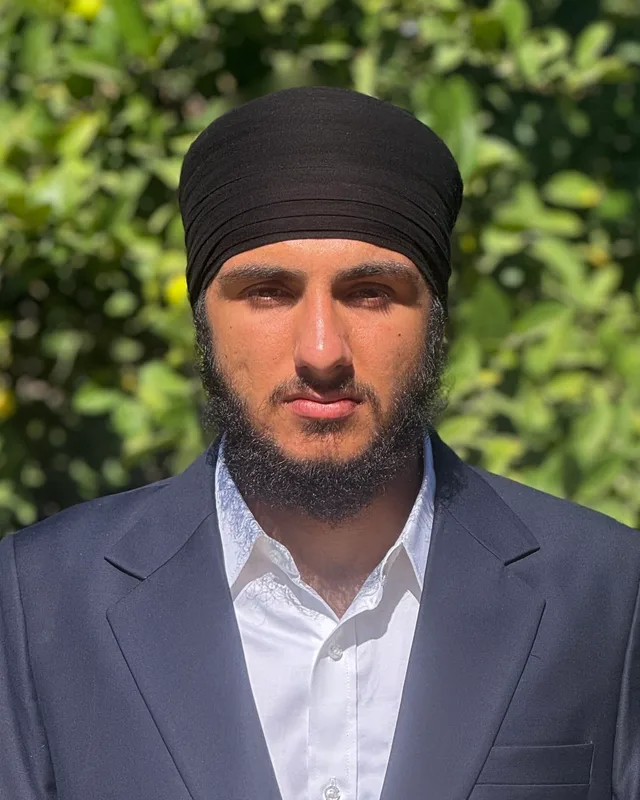
Mehtaab SinghFinance Coordinator 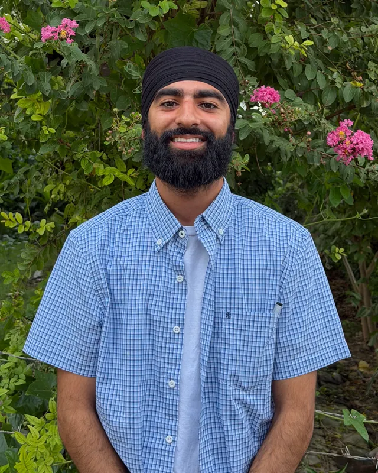
Gurshaan SinghOutreach Coordinator